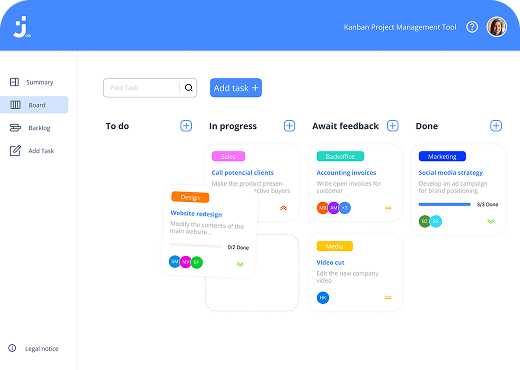

<div *ngIf="open" class="overlay-root">
  <div class="backdrop" (click)="onBackdropClick()" aria-hidden="true"></div>
  <div class="overlay-content">
    <div class="panel-left" role="dialog" aria-modal="true">
      <h1 class="panel-h1">01</h1>
      <h2 class="panel-h2">Join</h2>
      <h3 class="panel-h3">What is this project about</h3>
      <span
        >Task manager inspired by the Kanban System. Create and organize tasks using drag and drop functions, assign users and categories.
      </span>
      <div class="tech">
        
        <span>HTML</span>
        
        <span>CSS</span>
        
        <span>JavaScript</span>
        
        <span>Firebase</span>
      </div>

      <div class="btn-position">
        <button class="btn"><span>GitHub</span></button>
        <button class="btn"><span>Live Test</span></button>
      </div>
    </div>
    <div class="panel-right">
      <button type="button" class="panel-close" (click)="close()" aria-label="Close">
        
      </button>
      
      <button type="button" class="panel-next" aria-label="Next">
        <span>Next project</span>
      </button>
    </div>
  </div>
</div>

